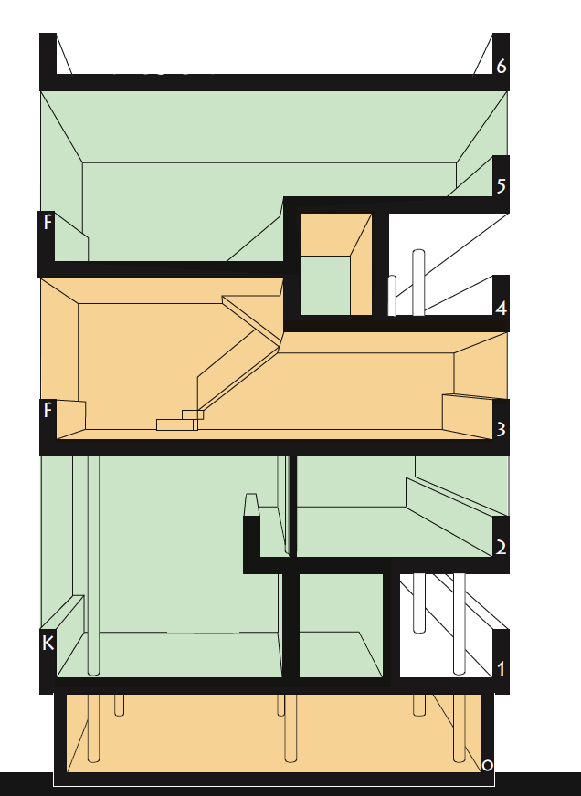

Дом Наркомфи́на — один из знаковых памятников архитектуры советского авангарда и конструктивизма. Построен в 1928 — 1930 годах по проекту архитекторов Моисея Гинзбурга , Игнатия Милиниса и инженера Сергея Прохорова для работников Народного комиссариата финансов СССР (Наркомфина). Автор замысла дома Наркомфина М. Я. Гинзбург определял его как «опытный дом переходного типа». Дом находится в. Москве по адресу: Новинский бульвар, дом 25, корпус 1.
С 1980-х годов дом находился в аварийном состоянии, был трижды включён в список «100 главных зданий мира, которым грозит уничтожение». В 1986 начато исследование и работа над проектом реставрации дома по инициативе Владимира Гинзбурга; в 1998 году проект отмечен первой премией фестиваля «Зодчество». В 2016—2020 годах дом отреставрирован по проекту АБ «Гинзбург Архитектс». Результаты исследования и реставрации опубликованы. Сейчас Дом Наркомфина — и памятник архитектуры, и жилой дом.
В 2021 году Музей современного искусства «Гараж» инициировал масштабное исследование Дома Наркомфина, в том числе истории жизни его создателей и обитателей на протяжении почти ста лет. Полученное знание становится основой экскурсионных маршрутов, публикаций, разнообразных публичных и просветительских проектов, выстроенных вокруг легендарного дома. Помимо этого, для жильцов дома, патронов Музея и владельцев карт GARAGE доступно кафе Дома Наркомфина, а на первом этаже жилого корпуса открылся книжный магазин.
Дом Наркомфина, или 2-й дом Совнаркома (СНК) РСФСР, стал одним из экспериментальных домов, построенных по результатам теоретических исследований Секции типизации Стройкома РСФСР, созданной по инициативе М. Я. Гинзбурга и работавшей под его руководством в 1928—1929 годы (в работе также участвовали входившие в объединение ОСА М. О. Барщ, В. Н. Владимиров, А. Л. Пастернак, Г. Р. Сум-Шик). Как сказано в монографии Йоганнеса Крамера [нем.] «Das Narkomfin Kommunehaus In Moskau 1928—2012», «аналогичные устремления существовали в то же время и в Германии, где этими вопросами занимался Исследовательский институт экономической эффективности в строительстве и жилищном хозяйстве (RfG [нем.]), хотя полученные им результаты были менее радикальными и менее призрачными».
Учреждению секции предшествовала работа в 1928 году комиссии Стройкома по отбору типовых проектов жилья для строительства. Комиссия пришла к выводу, что большинство известных на тот момент проектов не может быть использовано как типовые, поэтому для разработки типовых проектов была создана Секция типизации. Подготовкой для работы над новым форматом жилья также стала работа над домом Госстраха на Малой Бронной (1926—1927, М. Я. Гинзбург и В. Н. Владимиров) и конкурс на «эскизный проект жилого дома трудящихся», проведённый журналом «Современная архитектура» (Гинзбург подал на конкурс проект «Коммунального дома А-1»). Выставка проектов конкурса состоялась в июне 1927 года.
Результаты исследования секции М. Я. Гинзбург доложил на пленуме Стройкома РСФСР, где было принято постановление, рекомендовавшее несколько разработанных жилых ячеек к массовому строительству, а остальные — к опытно-показательному, начиная с 1928 года. Согласно этому постановлению было построено шесть «экспериментальных коммунальных домов переходного типа» в Москве, Свердловске и Саратове. Все они служили для проверки результатов теоретических исследований Секции типизации и были созданы в рамках финансировавшейся государством программы экспериментального строительства 1929 года. Проект дома Наркомфина создан в 1928—1929 годы, строительство велось в 1929—1930 годы.
С. О. Хан-Магомедов называет дом Наркомата финансов самым интересным из шести экспериментальных домов.
Заказчиком жилого комплекса выступал нарком финансов РСФСР (1924—1929) Н. А. Милютин, известный как автор схем социалистического расселения и градостроительных концепций соцгорода, он же определил функциональные характеристики будущего здания. Сотрудничество наркома Н. А. Милютина и архитектора М. Я. Гинзбурга началось несколько раньше, на строительстве дома Госстраха (1926—1927), — Милютин был инициатором строительства двух домов Госстраха в Москве. Идеи Н. А. Милютина об устройстве жилища воплотились при создании дома Наркомфина (Дома-парохода, или 2-го дома СНК).
По теории Милютина, «значительное повышение жизненного уровня рабочих и развитие обобществлённых форм обслуживания бытовых нужд трудящихся (общественное питание, ясли, детские сады, клубы и т. п.) постепенно уничтожают значение семьи как хозяйственного соединения. Этот процесс неизбежно приведёт, в конечном счёте, к полной переделке семейных форм общежития. <…> Задача раскрепощения женщины от мелкого домашнего хозяйства и вовлечение её в производство заставляет нас ставить вопрос о всемерном содействии этому процессу».
Задача реализации этих принципов и была поставлена перед авторами проекта. Согласно Е. Милютиной, это был дом «нового быта».
Сметная стоимость строительства составила 10 млн рублей. Строительство жилого корпуса осуществлялось под наблюдением комиссии, возглавлявшейся Н. А. Милютиным. Коммунальный корпус и корпус прачечной строились без утверждённых чертежей.

Архитектор Моисей Гинзбург. Фото М. С. Наппельбаума (1930-е годы)
Идеи, связанные с планировочной и объёмной структурой, так же как и с функциональным наполнением дома, изложены в публикациях журнала «Современная архитектура», докладе М. Я. Гинзбурга на пленуме Стройкома, а также в его книге «Жилище».
Секция типизации Стройкома РСФСР ставила перед собой задачи разработки экономичного решения проблемы жилья без потери его качества и даже с повышением комфорта, в частности, благодаря естественному освещению не только жилых, но и подсобных зон, в т. ч. коридоров.
Гинзбург критически оценивал так называемое моссоветовское строительство («массовое жилищное строительство Москвы первых лет после революции»), считал «экономический эффект» доходного дома более высоким. Поэтому работа Секции началась с анализа типологии «дореволюционного «доходного дома» и её оптимизации.
Так М.Я. Гинзбург писал об этой работе в свой книге «Жилище»:
"Работа была начата с анализа ряда типов жилья в дореволюционном, так называемом «доходном доме». Анализ показал, что этот тип жилья при всем своем культурном убожестве и известной степени удовлетворял интересам средней и мелкой буржуазии и притом давал экономический эффект более высокий, чем например массовое жилищное строительство Москвы первых лет после революции"
По словам Виктора Бухли, дом Наркомфина был домом переходного типа от «буржуазного дома» к «социалистической коммуне», и, хотя содержал в себе ранее существовавшие «буржуазные» квартиры (ячейки K и 2F), был структурирован таким образом, чтобы облегчить переход индивида к полностью социализированной жизни (в ячейках F).
Авторы сохраняли объём и высоту жилых помещений, урезая как площадь, так и высоту подсобных. Были удалены вторые лестницы и комнаты домработниц, уменьшены передние, ванные, спальни и кухни, причём последние — как по площади, так и в высоту. «Уплотнение» подсобных зон компенсировалось большей высотой хорошо освещённых гостиных. Рассчитывались пропорции квартир, оптимальные траектории движения человека внутри и схемы эффективной расстановки мебели. Приведённые в книге расчёты эффективности использования жилого пространства построены на рассмотрении отношения кубатуры к жилой площади квартир и параметра k (k=W/P, соотношение общей кубатуры здания к полезной площади жилых ячеек).
Секция Стройкома разработала несколько типов квартир-ячеек разного размера, названных буквами от A до F, причём в маленьких ячейках F размещалась душевая кабина, в больших ячейках А — ванна. Также был разработан «кухонный элемент» сокращённой площади, закрывающийся складной дверью-ширмой. Кухонные элементы были реализованы в доме на Гоголевском бульваре. Почти все созданные тематические жилые дома так называемого «переходного типа» предусматривали наличие завершённых индивидуальных квартир-ячеек и коммунальных зон для постепенного перехода к новому коллективному образу жизни.
Одной из ключевых позиций М. Я. Гинзбурга было создание изолированных квартир для отдельных семей: «Архитекторы Секции типизации пришли к выводу, что в условиях тех лет решение жилищной проблемы неотделимо от разработки типовых проектов экономичной малометражной (в первую очередь однокомнатной) квартиры для отдельных семей. Гинзбург рассматривал жилую ячейку будущего как предельно ужатую и экономную, но традиционную по структуре квартиру на одну семью. Пусть даже однокомнатную, но с индивидуальными кухней и ванной. В этом Гинзбург и его сотрудники-единомышленники были согласны с европейскими архитекторами, решавшими те же задачи, — Ле Корбюзье, Эрнстом Маем, Бруно Таутом, Ханнесом Майером.
В работе Секции Стройкома, как и в выступлениях М. Я. Гинзбурга, отразилась борьба идеи экономичного, но комфортного дома с отдельными квартирами и общественным сервисом — с развивавшейся параллельно в тот же период идеей дома-коммуны (того же Стройкома) с полным обобществлением быта. М. Я. Гинзбург противопоставлял свой «коммунальный дом переходного типа» практике домов-коммун и жёстко критиковал последнюю. По словам М. Я. Гинзбурга, «коммунальный дом» должен «способствовать быстрейшему безболезненному переходу к более высоким формам хозяйства». Именно для этого был запланирован развитый коммунальный блок с функциями общественного питания, стирки, уборки и присмотра за детьми — так же, как и минимальный размер кухонь в квартирах. Между тем М. Я. Гинзбург подчёркивает:
"мы сочли совершенно необходимым создание ряда моментов, стимулирующих переход на более высокую форму социально-бытового уклада, но не декретирующих этот переход"
Таким образом, называть «коммунальный дом» Наркомфина «домом-коммуной» принципиально неверно, так как дом Наркомфина был примером реализации идей противников идеологии дома-коммуны и принудительного обобществления быта.
Идеологическое объяснение неизбежности массового коммунального жилья было уже давно придумано в виде идеи «обобществления быта» и принципиального отказа от индивидуальной квартиры как символа мещанского, буржуазного и индивидуалистического хозяйства. Новым стало то, что именно во второй половине 1929 года отказ от семейной квартиры был декларирован на относительно высоком административном уровне (Совнарком РСФСР) и жильё с «обобществлённым бытом» начало в идеологическом смысле официально приобретать характер единственно возможного. Речь теперь могла идти не о коммунальных квартирах с кухнями на несколько семей, а только об общежитиях с общими кухнями и ванными.
Однако существование концепции коммунального дома архитекторов ОСА в контексте идеологии советского государства, в конце 1920-х — начале 1930-х всё более трансформирующейся под влиянием повестки сталинской индустриализации и риска репрессий, потребовало от архитекторов максимума гибкости в озвучивании и продвижении своих идей, что приводит к ряду противоречий в выступлениях разного времени. В частности, уже в 1929 году М. Я. Гинзбург говорит о необходимости «100-процентного обобществления производственных процессов жилья» и называет исполненную в доме НКФ задачу расселения 50 семейств, «всё ещё семейств», — «узкой».
Основной акцент архитекторы сделали на встроенную мебель и компактные сантехнические ячейки. Именно отсюда берёт начало практика совмещения ванной комнаты с туалетом, реализованная во всех семейных квартирах дома Наркомфина и знакомая нескольким поколениям советских людей. «Они пытались сократить лишние движения обитателей квартир, а также считали необходимым предложить им питаться в общественных столовых, мыться в общественных банях, сдавать бельё в механические прачечные, читать и отдыхать в библиотеках и клубах».
Рассматривая дом Наркомфина как опытный, М. Я. Гинзбург не считал его типовым и настаивал на том, что создание типовых проектов жилых домов — путь неправильный, ведущий к «однообразию жилой застройки». Гинзбург считал важной «максимальную гибкость» стандартов и разработку таких стандартных элементов, «которые можно было бы всячески комбинировать <…> варьировать типы жилья, используя одни и те же стандартные элементы».

Западный (дворовый) фасад дома Наркомфина, начало 1930-х. Большие квадраты остекления двухсветных комнат и фрагменты стеклянных стен «семейных» квартир. В торцах жилого корпуса на 4 и 5 этажах расположены сдвоенные квартиры семей начальствующего состава.
3d-разрез Дома Наркомфина с основными типами ячеек-квартир.
Под строительство дома для работников Наркомата финансов в апреле 1929 года была отведена территория огородов, ранее принадлежавших двум усадьбам, жилые дома которых были выстроены в XIX веке по красной линии Новинского бульвара; в одном из этих домов в 1910—1922 годы жил Ф. И. Шаляпин и сейчас располагается его дом-музей. Территория полого спускается к Пресненскому пруду, который к 1925 году был осушен и засыпан, а питавшая его река Пресня забрана на этом отрезке в трубу.